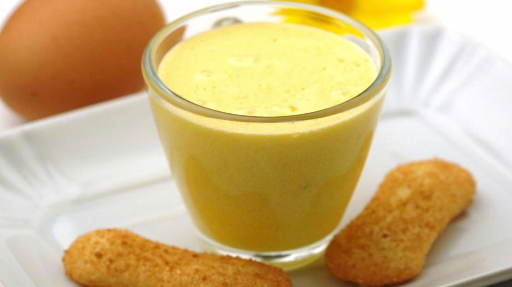

الوصفات الايطالية


حلوى السابايوني الإيطالية

المقادير
- ¼ كوب (60 مل) عصير عنب أبيض
- 3 صفار بيض كبير
- 3 ملاعق كبيرة (37.5 جم) سكر
طريقة التحضير
- في وعاء عميق نضع البيض والسكر والعصير ويخفق بالمضرب الكهربائي لمدة دقيقة حتى تمتزج المكونات
- نضع الوعاء فوق قدر ماء ساخن ( حمام ماء ) ونخفق خليط البيض على بخار الماء الساخن بالمضرب لمدة 10 – 15 دقيقة حتى يغلظ الخليط، ويُصبح كالكريمة
- نصب الحلوى في أطباق التقديم
- ثم نتركها تبرد قليلا
- تقدم مع بسكويت الليدي فينجرز دافئة أو باردة